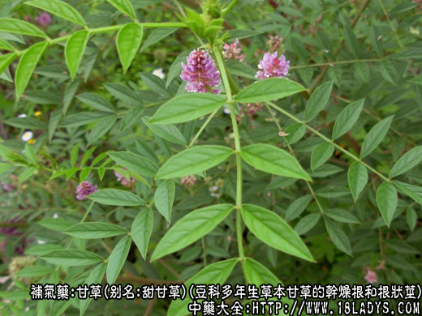
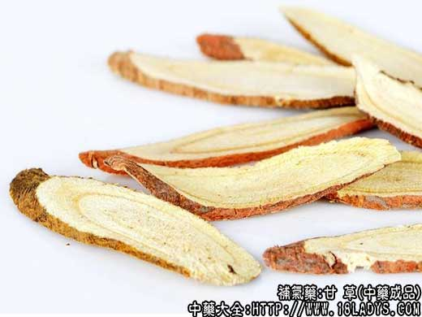
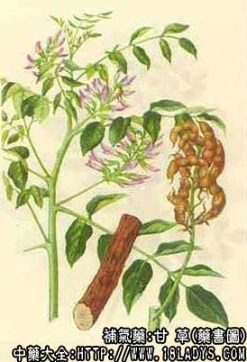

甘草为常用中药。《神农本草经》列为上品。因其味甘甜故名。
甘草产地甚多，质量不一，商品规格较为复杂。为了简化规格，便于国内统一执行，1964年商业、卫生两部颁发了“五十四种中药材商品规格试行标准”。以内蒙古为中心，将甘草分为西草和东草两类。
别名：甜甘草。
来源：为豆科多年生草本植物甘草和光果甘草等的干燥根和根状茎（芦头）。多为野生。
【产地】
西草：系指内蒙古西部及陕西、甘肃、宁夏、青海、新疆等地所产皮红、粉性足的优质草。
东草：系指内蒙古东部及东北三省、河北、山西等地所产的甘草。也包括新疆部分产品。
【性状鉴别】
西草：根呈长圆柱形，斩头去尾，规格品常加工成长23～50厘米，直径0.7～4厘米。两端平齐，有的口面中央有下限的小坑、习称呼叫眼。外皮紧细而有抽沟或有不规则的纵皱纹，及横长皮孔。表面红棕色至暗棕色。体重，质坚实，不易折断。折断面呈纤维状，外层为红棕色的栓皮层，内部呈黄色或淡黄色，粉性足，形成层环较明显，髓部少见，根茎部则可见髓，射线自中心向四周射出，略弯曲往往形成裂隙。无气，味甜。
以条粗，色红，皮细，体重质坚实（有骨气），口面光洁，粉性大，中央抽缩下陷成小坑者为佳。
【规格】
1、大草：直径2.7～4厘米，长23～50厘米。
2、条草：一等直径1.5厘米以上，二等直径1厘米以上，三等直径7毫米以上。长度均在23～50厘米。
3、毛草：为根呈圆柱形而弯曲的小草，去净残茎，无疙瘩头，长短不分。
4、毛疙瘩：为加工条草斩下的根头，大小不分。
5、草节：为甘草的断节，长7厘米以上，直径7毫米以上者。
东草：根呈圆柱形的长条，头端带有根状茎，呈结节状，上端粗向下部渐细，并有去掉支根的痕迹。长40～80厘米或更长，直径0.5～2厘米。表面紫红色或灰褐色，皮粗糙，横长皮孔显著，栓皮易剥落。体松质轻，不易折断，断面黄色，粉性小。气无，味浓甜。
以条粗长，外皮红，内色黄者为佳。
规格：也按根条粗细不同，分为1、2、3等。疙瘩头以下3厘米处，直径1.5厘米以上，长60厘米以上者为一等。直径1厘米以上，长50厘米以上者为二等。直径0.5厘米以上，长40厘米以上者为三等。三等以外，长短不分，兼有疙瘩头，直径在3毫米以上者，称毛草。
以上两类甘草，是按一段性状结合品质划分的，但因产区土质及植物来源不同，不能截然分开，主要是以品质区分，不受地区限制。各地产品，符合那类标准，即归那一类。
主要成分：含甘草甜素（甜味成分），为甘草酸的钙、钾盐。甘草酸水解后产生葡萄糖醛酸和甘草次酸。另含甘草黄素、葡萄糖、甘露醇、苹果酸、天门冬酰胺等。
药理作用：补脾益气、清热解毒、润肺止咳。现已证实其作用为：
1、解毒。对多种药物和毒素有解毒作用，有效成分为甘草甜素。可能通过吸附作用和类肾上腺皮激素作用而解毒。前人认为甘草能“解百药毒”、“调和百药”，与此作用有关。
2、类肾上腺皮质激素作用。有效成分为甘草次酸，能使水、钠潴留、血压增高、钾排出增加，具有类肾上腺皮质激素作用。
3、解痉。抑制平滑肌活动，对实验动物离体肠肌稍有接痉作用。前人所称“缓挛急”可能与此作用有关。
4、抑制胃酸分泌。动物实验证实能抑制组织胺引起的胃酸分泌。
5、祛痰。为保护性祛痰药。
炮制：切片，生用或蜜炙。
性味：甘，平。
归经：入十二经。
功能：补脾益气，清热解毒，润肺止咳，为缓和剂调补药。
主治：脾虚气弱，咳嗽气喘，痈疽疮毒，尿道疼痛及调和药性等。清火生用，补中炙用。
临床应用：作为缓和剂调补的要药，凡需缓和药性以及兼顾中气时，均可用甘草。
1、调和药性，在复方作为佐、使药使用，以缓和药物作用的猛烈和刺激性。配热药能缓其热，配寒药能缓其寒。如麻黄汤用甘草缓和麻黄、桂枝药性，使不致过于辛燥；调胃承气汤用甘草缓和大黄、芒硝的烈性，使泻下力不致太猛；又如甘草与半夏、细辛同用，能和解后两药的辛麻味。
2、健脾胃气，可用炙甘草。凡治脾虚便溏、胃虚口渴、肺虚咳嗽，在补益剂内炙甘草常不可少。至于炙甘草汤，更是治疗心血虚所致的脉结代（心律不整）、心动悸的名方。此方以炙甘草为主药，取其甘温健脾益气，再配其他补益药，健脾而养心，益气而补血。
3、泻火清热，可用生甘草。治疮痈肿痛，尤其咽喉痛、口疮、乳痈等，初起症状不剧时，可单用生甘草一味，也可配其他清热解毒药。甘草桔梗汤即重用甘草以解热毒，治咽喉疼痛（咽炎）、肺痛吐脓（肺脓汤）；泻黄散也可重用甘草与其他清热药配伍，治胃热口疮。至于治湿疹和面部痤疮。可用甘草45g，银花30g，水煎服。
4、缓急止痛。“急”指筋肉拘急火挛急（即抽搐或痉挛，甘草能抑制平滑肌活动，故能缓解胃肠平滑肌痉挛而止腹痛，常与白芍配伍，方如芍药甘草汤，可治小腿腓肠肌痉挛。又如胃脘痛剧烈（胃痉挛痛）），服其他药不止，可用甘草120g，白术30g，水煎频服。
5、用于热咳、燥咳，如上呼吸道炎，支气管炎引起的咳嗽，痰不多，黄色，难咯出，或干咳无痰。甘草在汤剂中能保护发炎咽喉和气管的粘膜，减轻刺激，有助于止咳，多与杏仁、川贝、前胡、桑叶等止咳化痰药同用。
6、用于解读，为解读要药。前人用的各种解读方剂，总离不开一味甘草，或单味煎水服，或配绿豆等煎服。
此外，甘草还用于治疗溃疡病，可制酸而止痛，单用，或配乌贼骨，瓦楞子等；治轻症的慢性肾上腺皮质功能不全，用甘草末或用甘草流浸膏，都有一定效果。又由于甘草有甜味，也有用作矫味剂，在小儿药中尤为多用。
使用注意：1、甘草生用则通，炙用则补。生甘草以清火解读见长，炙甘草则以补中益气较胜。治疮痈、湿疹、感冒、发热、干咳，用生甘草较好；治胃寒气弱、血亏阴虚，与补药同用，或用于调和药性时，则用炙甘草较好。
2、粉草（即粉甘草）为甘草之一种，色黄、粗大、结实、有纹，粉性较强。用于清火解毒，祛痰较好，例如热咳、燥咳可用银花煎汤送服粉草末。又小儿遗尿可用粉草煎汤，每夜饮服。
3、甘草梢为根梢部切片晒干而成，有利尿作用，治热淋（急性尿道炎等）或火盛而致的小便短赤、尿道作痛（所谓茎中痛）。
4、下列情况不宜用甘草：1、湿盛者（腹满、呕吐、肿胀等）；2、在渗利、去湿、攻下的治疗中，如要药药物迅速发生效力，不宜用甘草配伍。
5、甘草配海藻，前人说有相反作用，但古方也有用甘草配海藻治病，如《医宗金鉴》之海藻玉壶汤治瘿瘤，即以海藻与甘草合用。现代实践在治疗甲状腺肿时，海藻甘草同用，也未见不良反应。
6、关于甘遂、大戟、芫花反甘草问题。据近年来动物实验资料报道，甘草与甘遂配，如甘草量等于或小于甘遂量，无相反作用，有时还能解除甘遂的副作用，但如甘草大于甘遂量，则有相反作用。另一实验结果是，甘草与甘遂混合应用后，豚鼠有严重反应（胃部膨胀，气胀）或致死。
大戟、芫花与甘草合用时，其利尿和泻下作用受到明显抑制。并有使芫花毒性增强的倾向。甘草用量比例越大，其相反作用越强，反之无相反作用。
临床上，一般不把甘草与甘遂、大戟、芫花配伍入药。
用量：常用量3～6g。一般清热及调和药性可按此量。作主药用时量较大，用9～30g，大剂用至30～60g，甚至120g。
处方举例：炙甘草汤（《伤寒论》）：炙甘草9g，党参9g，阿胶6g（溶化），生姜9g，桂枝3g，麦冬9g，火麻仁9g，生地15g，大枣18g，水煎服。
甘草桔梗汤（《伤寒论》）：桔梗6g，甘草12g，水煎服。
泻黄散（《小儿药证直诀》）：甘草90g，防风120g，石膏15g，山栀仁3g，藿香21g，以蜜酒同炒至香，研成细末，充分混匀，每次3～6g，用水调服，也可按上述比例配方煎汤服。
注：1、刮去外皮者称粉甘草，对质量并无补益，浪费很大，目前除出口仍刮皮外，内销商品，已取消粉草规格。
2、甘草为主要出口商品之一，为了适应国外市场需要，仍保持一部分原有规格，现将主要产区及其产品特点，简述如下：
（1）梁外草：主产于内蒙古伊盟黄河以南的杭锦旗。体质坚实，沉重（有骨气），皮紧细，枣红色，口面光洁，大头中心凹陷，习称“胡椒眼”，粉性足，断面淡黄色。但根条两端粗细不匀，且显支叉痕。
（2）王爷地草：主产于宁夏巴盟的阿拉善左旗。体质较梁外草柔韧，外皮内色均较梁歪草深，根条两端粗细均匀，支叉痕较少，口面光洁度稍差，余同梁外草。
以上两种习惯认为质量最佳。
（3）内蒙古伊盟中心地区鄂托克旗及宁夏回族自治区的陶东、平罗所产的“西旗草”：伊盟达特旗所产的“上河川草”；以及陕北靖边、定边地带产的“边草”及甘肃民勤、庆阳、张掖、玉门等地所产的“西北草”。它们的共同点是皮色红褐、棕红或黑褐不等，内色老黄，体质较松，骨气差，粉性小，口面显裂纹。习惯认为梁歪草质次，但优于下河川草。
（4）下河川草：主产于内蒙古包头附近的土默特旗、托克托、和林格尔等地。皮灰褐色，根条两端粗细不匀，皮松，易剥落，粉性很差，质次。
（5）东北草：主产于内蒙古东部，辽宁的昭乌达盟，吉林的哲盟，及黑龙江的呼盟所产者。皮紫红或暗红色，疏松，易破损。体质轻泡，粉性小，但味很甜、为标准的东草。
（6）新疆草：植物来源较多，除甘草外，尚有光果甘草、胀果甘草及黄甘草等。外皮棕褐色，大部刮白霜（习称碱皮）体质松坚不一，内色黄，粉性差，味甜而带苦。
（7）山西、河北所产的甘草，根条细小，多为毛草或乱草。
上述甘草，习惯虽有好次之分，但均同等入药。
3、甘草用途很广，除药用外，在食品工业上也广泛需要，如糖果、酱油、蜜饯以及卷烟等。现产区如内蒙古、呼和浩特及新疆已设厂就地加工，煎成甘草膏或甘草霜运输全国各地和出口。